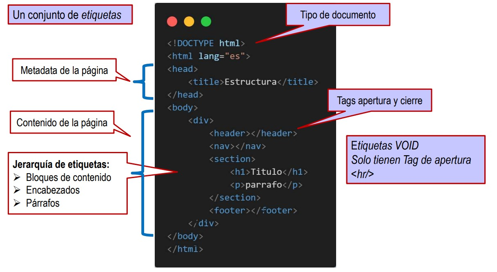
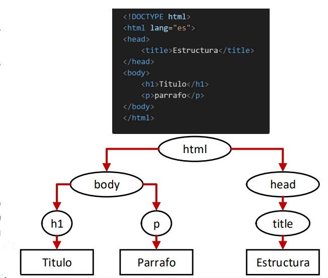
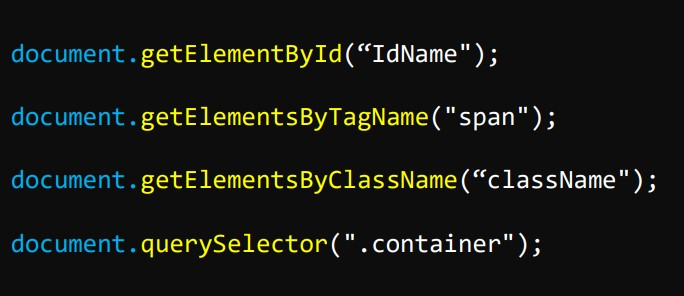
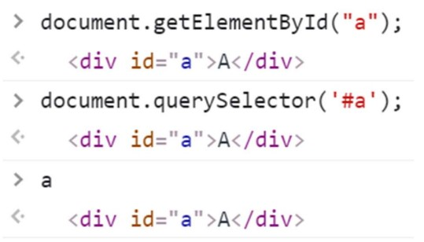
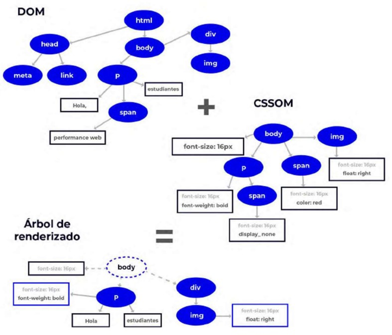

CONTENIDO DE LA SEMANA. HTML
-Principales etiquetas del Lenguaje HTML 5
-Árbol DOM
-Ciclo de Vida de una Página Web
¿Cómo funciona HTML?
HTML, es un lenguaje de marcado, define la semántica y estructura al contenido de las páginas web. Se basa en ETIQUETAS “<“ “>”
Se guarda en archivos con extensión .html o .htm y se ve a través de cualquier navegador.
Es parte del estándar SGML (Standard Generalized Markup Language o lenguaje de marcado generalizado estándar)

Principales etiquetas del Lenguaje HTML 5

Árbol DOM
Qué es? DOM (Document Object Model) es una interfaz para documentos HTML y XML que se representa como un árbol de elementos. Permite leer y manipular el contenido, la estructura y los estilos de la página con un lenguaje de scripting como JavaScript.
-RENDER TREE
*La forma de un documento HTML, muestra estilos e interactividad, se denomina Critical Rendering Path. Primero se establece que se va a renderizar y se denomina render tree (DOM + CSSOM). Luego, el navegador realiza el renderizado.
-CSSOM: representa los estilos asociados a los elementos.
-DOM: representa los elementos.
-El render tree excluye los elementos que no están visibles como por ejemplo, los que tienen el estilo display: none. El DOM si lo incluiría en su árbol de nodos.
*ÁRBOL DE NODOS
-El objetivo del DOM es convertir la estructura y el contenido del documento HTML en un modelo de objeto que puede ser utilizado por varios programas. La estructura del documento es conocida como un árbol de nodos (node tree)

DOM (Document Object Model) es la interfaz que permite que lenguajes de programación como JavaScript, modifiquen la estructura, el estilo o el contenido de la página web.
-A través de la etiqueta "script", se puede comenzar a manipular el documento o los elementos de la página.
-El DOM nos ofrece una multitud de propiedades y métodos para acceder a los diferentes elementos y poder modificarlos.


Ciclo de Vida de una Página Web
También referido como Critical Rendering Path (ruta de renderizado crítica) es la secuencia de pasos que sigue el navegador para convertir HTML, CSS y JavaScript en píxeles en la pantalla. Esta secuencia de pasos es realizada por el motor de renderizado del navegador.
¿EN QUÉ CONSISTE?
Una solicitud de una página web o aplicación comienza con una petición HTML. Al realizar una solicitud, el servidor devuelve los encabezados y datos de respuesta..
1. Se crea el Document Object Model (DOM) a partir de la respuesta HTML. También inicia solicitudes cada vez que encuentra enlaces a recursos externos, ya sean hojas de estilo, scripts o referencias de imágenes incrustadas.
-Algunas solicitudes son bloqueantes, lo que significa que el parseo del resto del HTML se detiene hasta que se cargue el recurso.
2. Se crea el CSS Object Model (CSSOM).
3. Cuando tiene el DOM y el CSSOM listos, se combinan en el árbol de renderizado (Render Tree), obteniendo los estilos para todo el contenido visible.
4. Una vez que se completa el árbol de procesamiento, el diseño calcula la posición y el tamaño exactos de cada objeto (layout) del árbol de procesamiento.
5. Una vez completado, se procede a la representación o “pintado”, que consiste en tomar el árbol de renderizado final y renderizar los píxeles en la pantalla.
